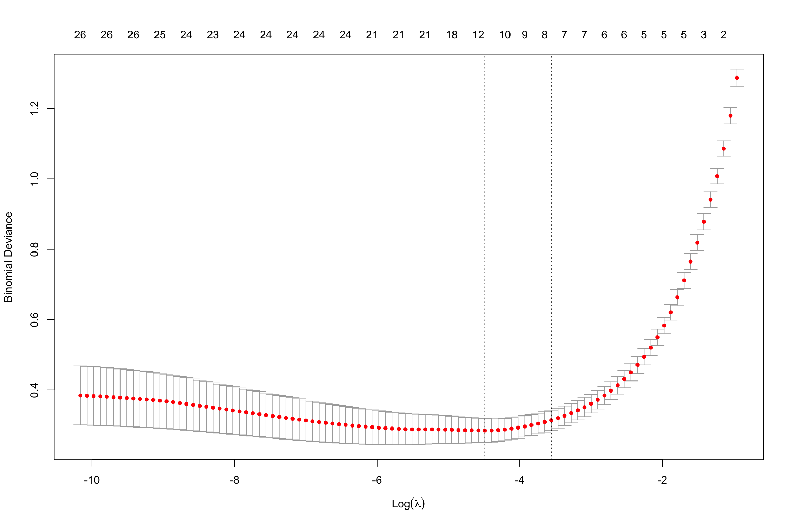

# install.packages("mlbench")
library(tidyverse)
library(broom)
library(modelsummary)
library(mlbench)
library(glmnet)
library(caret)Understanding Precision and Recall in Logistic Regression: A Practical Guide
Introduction
In the world of modeling, statistics, and machine learning, precision and recall are crucial metrics. However it can be confusing to understand the difference between these two concepts. In this blog post, I’m going to walk you through an interactive example using R code. To keep things relatively simple, our model of choice will be logistic regression. For our dataset, we’ll be using the Breast Cancer Wisconsin Dataset. It is a diagnostic dataset that contains 10 features of a given cell, such as thickness, cell size, shape, etc. There is a “class” variable that shows whether the diagnosis for this cell was “malignant” or “benign.”
We will be using logistic regression to help us determine whether a given patient has a “malignant” or “benign” tumor. This dataset is well-suited to using logistic regression because there are two outcome variables. We’ll then walk through an example of a model that prioritizes high precision and another model that optimizes high recall.
Let’s get started!
Understanding Classification Outcomes: True Positives, False Positives, True Negatives, and False Negatives
The first thing we need to understand before precision and recall are our classification outcomes. These outcomes can be categorized into four types based on the accuracy of the predictions in relation to the actual data:
True Positives (TP): These are the cases where the model correctly predicts the positive class. For example, the model correctly identifies a patient as having a malignant tumor.
False Positives (FP): These occur when the model incorrectly predicts the positive class. For example, the model mistakenly identifies a patient with a benign tumor as having a malignant tumor.
True Negatives (TN): These are the cases where the model correctly predicts the negative class. For example, the model correctly identifies a patient as not having a malignant tumor.
False Negatives (FN): These occur when the model fails to predict the positive class. For example, the model mistakenly identifies a patient with a malignant tumor as having a benign tumor.
What are Precision and Recall?
Precision and Recall are essential metrics to understand, especially in cases where identifying true positives and avoiding false positives is crucial.
- Precision measures the accuracy of positive predictions made by the model. It is the ratio of true positives to the sum of true and call positives. When we have high precision, this indicates a low rate of false positives.
- Recall measures the ability of the model to find all relevant cases within a dataset. It is the ratio of true positives to the sum of true positives and false negatives. High recall indicates that the model identified most of the actual positives.
Another critical point is that Precision and Recall are often inversely related—meaning that improving one can sometimes lead to a reduction of performance in the other. So how do we now which metric we want to optimize? It all depends on our application.
In this post, we’re going to think about this question using the breast cancer dataset. In this blog post, we’re going to walk through some interactive examples to help us figure out in this application which we should optimize—precision or recall.
Loading the R Packages
Since this will be an interactive tutorial using R, we’re going to start by loading in the appropriate R packages.
tidyverse is a collection of R packages useful for statistics and data science. It contains other commonly used packages like ggplot2 for data visualization, dplyr for data manipulation, and readr for reading data inside of it.
broom helps with displaying our data into tidy data frames
mlbench is the library we’ll use to load in our dataset
modelsummary provides customizeable summary tables for statistical models in R
glmnet is what we’ll use to implement generalized linear models. We’re going to use this instead of glm because it is a bit more robust with regularization to help prevent overfitting.
caret caret stands for Classification And REgression Training and it will help us with model training
If you don’t have any of these packages installed, then uncomment the install.packages line and add in the packages you need to follow along.
Load the dataset
Now we’ll load in the dataset using the mlbench library. In this code block, we’re also going to convert the Class column of the breast_cancer dataset from a categorical string format into a binary numeric format. Specifically, it changes the value “malignant” to 1 and all other values (which in this case is “benign”) to 0. This preprocessing is a necessary step for using our logistic regression model in the next step. Finally, we’ll display a small portion of the breast_cancer dataset using the head function.
# Load in the dataset
data("BreastCancer", package = "mlbench")
# Assign to the variable breast_cancer
breast_cancer <- BreastCancer
# Convert the Class column from a categorical string format to binary numeric format
breast_cancer$Class <- as.factor(ifelse(breast_cancer$Class == "malignant", 1, 0))
# Display a few rows of the dataset
head(breast_cancer) Id Cl.thickness Cell.size Cell.shape Marg.adhesion Epith.c.size
1 1000025 5 1 1 1 2
2 1002945 5 4 4 5 7
3 1015425 3 1 1 1 2
4 1016277 6 8 8 1 3
5 1017023 4 1 1 3 2
6 1017122 8 10 10 8 7
Bare.nuclei Bl.cromatin Normal.nucleoli Mitoses Class
1 1 3 1 1 0
2 10 3 2 1 0
3 2 3 1 1 0
4 4 3 7 1 0
5 1 3 1 1 0
6 10 9 7 1 1We can see from the head(breast_cancer) output above that things seem to be looking in order. We can see that our Class column has 0s and 1s as expected, and we can also see those other features of the dataset we discussed before such as thickness, cell size, cell shape, etc. represented in the columns. It looks like we’re ready to move onto the next step!
Splitting the Dataset into Test and Train Sets
The next step to understanding precision and recall is to separate our dataset into train and test splits. Its standard practice in machine learning to use an 80%/20% split, meaning 80% of our dataset is reserved for training, while 20% is used for testing the model performance. Its important to reserve a portion of data that the model has not seen before for evaluating the performance later on.
We’ll also do something called setting the seed (in this case we’re using 123). Basically, the reason we do this is because it turns out that the problem of true, unpredictable randomness is very difficult in computing. The “random” shuffles we produce for splitting 80% of the rows into training and 20% into testing is actually deterministic based on this seed value that we set. Its actually a good thing though for reproducability of our experiments. If we had this in a paper and as long as we document what seed value we use, our collaborators should be able to reproduce the same test and train splits as we did.
In order to implement this testing and training split, we’ll use a function called createDataPartition which comes from the caret package we installed earlier. Then we’ll assign train_data to the 80% partition we created, and then test_data will use the remaining 20% of the rows from the breast_cancer dataset.
# Setting the seed for reproducability
set.seed(123)
# Splitting the dataset
# p=0.80 means that 80% of the data will be used for trianing
training_rows <- createDataPartition(breast_cancer$Class, p = 0.8, list = FALSE)
# Creating the training data set from the 80% split above
train_data <- breast_cancer[training_rows, ]
# Using the opposite rows (20% split) for the testing data
test_data <- breast_cancer[-training_rows, ]Regularizing Logistic Regression Models in R
Now that we have our testing and training data all set up, the next step is to create our actual logistic regression model in R.
The first thing that we’ll do here to create a model matrix. This is necessary for the glmnet function that we’re using, because it expects the data in a certain format. This function will ensure that all our data is numeric and in the proper format before passing it into the logistic regression function.
Our train set is separated into x_train and y_train—all that this means is that the data in x_train are the predictor variables, whereas y_train is our class variable (AKA, malignant or benign).
Next, we’re going to call the cv.glmnet function, which fits a logistic regression model using cross-validation to optimize the lambda parameter, which controls the strength of the regularization. The family = "binomial" argument specifies that it is a logistic regression for binary classification.
Then, we’ll generate a plot of the cross-validation results from cv_model.
# Prepare model matrix for the predictors
x_train <- model.matrix(Class ~ Cl.thickness + Cell.size + Cell.shape, train_data)[,-1]
# Extract response variable
y_train <- train_data$Class
# Fit a regularized logistic regression model
cv_model <- cv.glmnet(x_train, y_train, family = "binomial")
# Plotting the cross-validation results
plot(cv_model)
Finally, we’ll add in some code to prepare the test data and make predictions using our trained logistic regression model.
# Creating the Model Matrix for Test Data
x_test <- model.matrix(Class ~ Cl.thickness + Cell.size + Cell.shape, test_data)[,-1]
# Making Predictions
predictions <- predict(cv_model, newx = x_test, s = "lambda.min", type = "response")Demonstrating the Trade-off with R Code
Now that we have our logistic regression model, we’re going to use it to show how adjusting the threshold can impact precision and recall.
Understanding the Output of a Model
In logistic regression models, the output is a probability that indicates the model’s confidence level in predicting the positive class. This probability ranges between 0 and 1.
The threshold is a critical parameter that you set to decide when to classify a prediction as positive (1) or negative (0). For example, a common default threshold is 0.5. If the model’s predicted probability for a positive class is greater than 0.5, the prediction is classified as positive; otherwise, it is negative. Adjusting this threshold affects the balance between sensitivity (recall) and specificity, impacting the counts of true positives, false positives, true negatives, and false negatives in your results. This adjustment allows you to tailor model performance to specific needs, depending on which outcomes (e.g., false positives vs. false negatives) carry a higher cost in your application context.
High Precision and Low Recall
In this example, we will use a high confidence threshold to demonstrate how this affects the precision and recall. In this example, we’re going to set our threshold to 0.9. Higher thresholds tend to produce models with higher precision (fewer false positives) but potentially lower recall (more false negatives).
# Assuming 'predictions' contains model predicted probabilities
predicted_high_precision <- ifelse(predictions > 0.9, 1, 0) # High threshold
conf_high_precision <- table(Predicted = predicted_high_precision, Actual = test_data$Class)
precision_high_precision <- prop.table(conf_high_precision, 1)[2, 2]
recall_high_precision <- prop.table(conf_high_precision, 2)[2, 2]
print(paste("Precision:", precision_high_precision))[1] "Precision: 1"print(paste("Recall:", recall_high_precision))[1] "Recall: 0.645833333333333"To examine the output a bit further, lets look at the confusion matrix. A confusion matrix is a tool used to describe the performance of a classification model, and it will organize the output into predicted and actual classifications: * Bottom-right: True positives - Correct positive predictions. * Bottom-left: False positives - Incorrectly predicted positives. * Top-right: False negatives - Incorrectly predicted negatives. * Top-left: True negatives - Correct negative predictions.
conf_mat <- table(Predicted = predicted_high_precision, Actual = test_data$Class)
conf_mat Actual
Predicted 0 1
0 91 17
1 0 31In this case, we can calculate our precision and recall manually by doing the following:
# Precision = (TP)/(TP + FP)
precision = (31)/(31+17)
precision[1] 0.6458333# Recall = (TP)/(TP+FN)
recall = 31/(31+0)
recall[1] 1And this matches our above output! The interpretation of a model with high precision and low recall is that this model will miss many examples of the “malignant” tumor, but amongst all the ones it does classify as a malignant tumor it is correct.
This would be the equivalent of a doctor who misses about 35% of cases with a malignant tumor. Yikes! Let’s see if we can do better than that.
High Recall and Low Precision
In this example, we’re going to set the threshold low and see how this affects precision and recall.
predicted_high_recall <- ifelse(predictions > 0.1, 1, 0) # Low threshold
conf_high_recall <- table(Predicted = predicted_high_recall, Actual = test_data$Class)
precision_high_recall <- prop.table(conf_high_recall, 1)[2, 2]
recall_high_recall <- prop.table(conf_high_recall, 2)[2, 2]
print(paste("Precision:", precision_high_recall))[1] "Precision: 0.774193548387097"print(paste("Recall:", recall_high_recall))[1] "Recall: 1"We can see here that precision is about 76% and recall is at 100%. So this means that amongst all the patients they’ve ever had, they’ve never missed any cases of malignant tumors. However for about 24% of cases, the doctor will tell the patient they have cancer and they actually have a benign tumor. Not ideal, but certainly better than the previous case where 35% of patients with cancer would go untreated!
Conclusion
In conclusion, we can see how the choice between prioritizing precision or recall depends on the context of the problem. In this example in the field of medical diagnostics, missing a positive diagnosis (low recall) is probably more harmful than a false positive (low precision). We’ve seen how given the exact same model, we can show how the otuput can significantly change by tuning this confidence threshold.
Hopefully you can take this knowledge and apply it in your own models in the future!